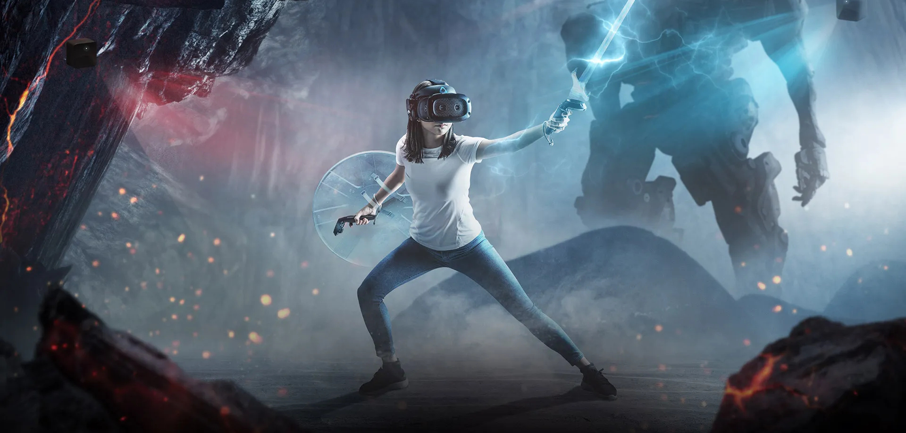
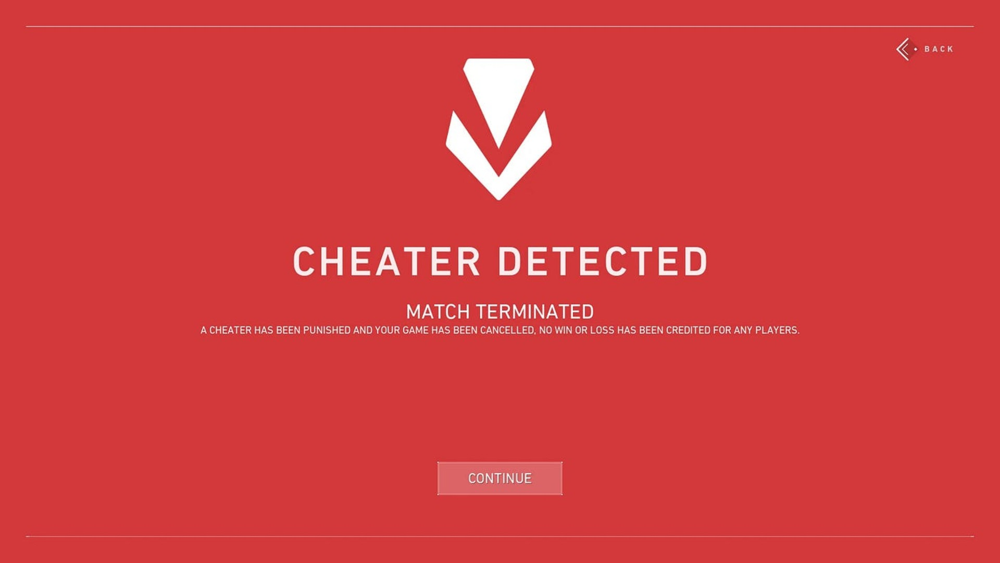

Cognito Leap (2035)

Cognito Leap je prva dvojna MMORPG igra koja savršeno spaja virtuelni i stvarni svijet.
Kroz nju sam integrisala game development, mobilni razvoj (AR mod) i vještačku inteligenciju
kako bih stvorila neviđenu interakciju između igrača i NPC-jeva.
Ključne karakteristike:
- Platforme: PC/Konzola (puna 3D simulacija) i istovremeno u Proširenoj Stvarnosti (AR)
preko mobilnih uređaja nove generacije.
- Inovacija: Korišćenje Generativne AI (GPT-X) za kreiranje jedinstvenih, neponovljivih razgovora sa
NPC-jevima i dinamičnih misija baziranih na vašoj lokaciji u stvarnom svijetu.
- Mobilna tehnologija: Optimizacija za Edge Computing (brzo procesiranje na samom uređaju) i 7G mobilne mreže
za minimalnu latenciju u AR modu.
- Moja uloga: Glavni arhitekta AI integracije, dizajner cross-platform logike i vođa mobilnog AR razvoja.
Ethos Shield (2031)

Napredna cyber sigurnosna platforma za eSport, kreirana s ciljem eliminisanja varanja i
toksičnog ponašanja u online igrama. Spaja dubinsku analizu ponašanja sa transparentnom
blockchain tehnologijom.
Ključne karakteristike:
- Glavni cilj: Stvaranje sigurnijeg i etički poštenijeg okruženja za online gaming.
- AI detekcija: Koristi Neuromorfnu AI za analizu ponašanja igrača u realnom vremenu
(ne samo tehničkih cheat-ova, također i cyber-bullyinga).
- Sigurnost: Koristi Decentralizovani Blockchain za snimanje istorije ponašanja igrača,
što onemogućava hakerima da mijenjaju etički score ili varaju sistem.
- Prikaz rezultata: Web 5.0 interaktivni dashboard za eSport organizatore koji prikazuje etički score igrača uživo.
- Moja uloga: Glavni inženjer cyber sigurnosti, dizajner AI modela za etičku detekciju i kreator sigurnog web interfejsa.